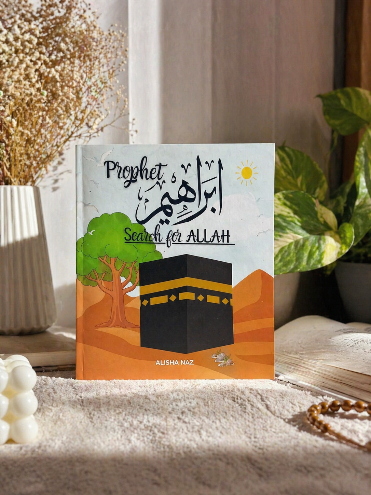

Honest reflections, Islamic parenting tips, and screen-free living ideas for Muslim families
Read the full piece below
I never planned to be a homeschooling mama. Honestly, when I was pregnant, I had a very different picture in my head — drop the baby off at a nice school, watch them thrive, feel like I was doing everything right. But then Ibrahim was born, and something shifted inside me that I cannot fully explain except that it felt like a whisper from Allah saying: this one is your amanah. Guard it.
And one of the first things I wanted to guard him from? Screens.
Not because screens are purely evil — but because I realized very early on that whatever fills the first five years of a child's world becomes the lens through which they see everything else. I did not want that lens to be YouTube. I wanted it to be the Quran. I wanted it to be the name of Allah on his lips before he even fully knew what it meant.
"Whatever fills the first five years of a child's world becomes the lens through which they see everything."
So I made a decision — imperfect, messy, some days completely exhausting — to build a screen-free, deen-filled home for my little Ibrahim. And this blog is my honest journal of how that is actually going.
Ibrahim was maybe eight months old. I handed him my phone just to get five minutes of peace — every mama knows that moment. And I watched his little eyes go completely blank. Fixed. Unblinking. Like something had switched off inside him.
It scared me. Not in a dramatic way. Just a quiet, certain fear. This is not what I want for him.
I started reading. I started researching. And then I started doing the thing I should have done first — I started making dua. And slowly, clarity came. If I want him to love Allah, he needs to hear His name constantly. If I want him to follow the sunnah, he needs to see it lived out in front of him every single day. That is my job. Not a screen's job. Mine.
Replace one screen session today with a simple Islamic activity — recite Surah Al-Fatiha together, point to the sky and say "Allah," or read one page of a Prophet's story. Small and consistent beats big and sporadic every time.
I want to be real with you — screen-free does not mean perfect. It does not mean I have never, ever turned on a cartoon when I was sick or exhausted. It means that screens are not the default. They are not the first reach. They are not the babysitter.
Instead, our default is books. Flash cards. Duas said out loud together. Busy books that keep little hands working. The names of Allah repeated like a gentle song throughout the day. Stories of the Prophets told at bedtime instead of nursery rhymes that have no meaning for us.
It is simpler than it sounds — and harder than it looks. But wallaahi, the results I see in my little Ibrahim make every difficult day worth it.
Here is what the modern parenting world will not tell you: you cannot outsource the building of your child's aqeedah. No school will do it. No app will do it. No Islamic cartoon — however well-made — will do it the way a present, intentional mother will.
Children learn what they live. If they live in a home where Bismillah is said before every meal, where Alhamdulillah is whispered after every blessing, where the stories of Ibrahim (AS) are told with love and detail — that becomes their normal. That becomes their identity.
"You cannot outsource the building of your child's aqeedah. It begins at home — with you."
And that is exactly why I wrote my first children's book — Prophet Ibrahim: Search for Allah. I wanted my Ibrahim to have a beautiful, illustrated story he could hold in his hands, that would plant the seed of tawheed in his heart before the world tried to plant anything else. A boy named after a Prophet — he deserves to know his story.

If you are a mama reading this — whether you homeschool or not — know that you are not alone in wanting more for your children. More than screens. More than distraction. More than a world that pulls them away from their deen before they even know what deen means.
This is a space for us. Imperfect, trying, dua-making mamas — building little Ummahs one day at a time.
With love and duas,
Alisha Naz — Umme Ibrahim Studio 🌙
All our blog posts live on Substack — subscribe for free to get new articles delivered to your inbox every week.
📖 Visit Our Substack Blog